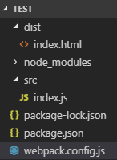
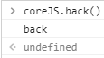
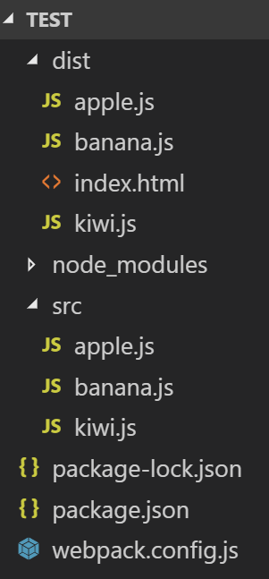
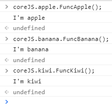

output.library 與 output.libraryTarget 的使用
一、output.library 與 output.libraryTarget 的使用
準備一範例，其資料結構為

index.html 內容如下
<!DOCTYPE html> <html> <head> <meta charset="utf-8" /> <meta http-equiv="X-UA-Compatible" content="IE=edge"> <title>Page Title</title> <meta name="viewport" content="width=device-width, initial-scale=1"> <script src="main.js"></script> </head> <body> </body> </html>
index.js 內容如下
export function play() { console.log("play"); } export function stop() { console.log("stop"); } export function back() { console.log("back"); } export function repeat() { console.log("repeat"); }
webpack.config.js
const path = require('path'); module.exports = { entry: './src/index.js', output: { filename: 'main.js', path: path.resolve(__dirname, 'dist'), library: 'coreJS', libraryTarget: 'var', } };
說明：
1、由於 webpack 所編譯出來的程式碼都會自動把所有程式再包一層起來，
不讓全域變數、函式隨便露出，但有時候還是會有存取內部變數、函式的需要，
這時 output.library 值的指定，則可以幫你開一道門去存取他。
如上例，output.library 值指定為 coreJS，而想被存取的函式請記得加 export，如 index.js。
2、output.libraryTarget 表示指定對變數、函式存取的方式，
output.libraryTarget 沒有指定時，預設值是 var，當 output.library 變數名稱指定為 coreJS 時，
則在 consloe 端可以使用如下方式呼叫

output.libraryTarget 存取方式的指定可以有許多種
a、output.libraryTarget : 'this'
在 consloe 端呼叫方式為
this.coreJS.back();
b、output.libraryTarget : 'window'
在 consloe 端呼叫方式為
window.coreJS.back();
c、output.libraryTarget : 'global'
只功能似乎被移掉了。
d、output.libraryTarget : 'commonjs'
e、output.libraryTarget : 'amd'
output.libraryTarget 還有其他方式可以指定，剩下就不提了。
二、output.library 全域變數底下再分成各個 entry 進入點去呼叫函式
我也不知如何形容該特殊方法，
但我認為這方法很特別，webpack 上面的文件可沒提到這方法，直接舉例。
範結構如下

dist/index.html 的內容為
<!DOCTYPE html> <html> <head> <meta charset="utf-8" /> <meta http-equiv="X-UA-Compatible" content="IE=edge"> <title>Page Title</title> <meta name="viewport" content="width=device-width, initial-scale=1"> <script src="apple.js"></script> <script src="banana.js"></script> <script src="kiwi.js"></script> </head> <body> </body> </html>
src/apple.js 的內容為
export function FuncApple() { console.log("I'm apple"); }
src/banana.js 的內容為
export function FuncBanana() { console.log("I'm banana"); }
src/kiwi.js 的內容為
export function FuncKiwi() { console.log("I'm kiwi"); }
webpack.config.js 的內容為
const path = require('path'); module.exports = { entry: { apple: './src/apple.js', banana: './src/banana.js', kiwi: './src/kiwi.js', }, output: { filename: '[name].js', path: path.resolve(__dirname, 'dist'), library: ['coreJS', '[name]'] }, };
於 console 端下指令執行結果

參考資料：